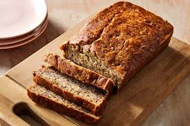

Banana Bread

Delicious and moist banana bread recipe.
This banana bread is a delightful treat, perfect for breakfast or as a snack. Made with ripe bananas, it has a
soft, moist texture and a rich, sweet flavor. The aroma of freshly baked banana bread fills the kitchen,
inviting everyone to enjoy a slice. Whether served plain or with a spread of butter, this recipe is sure to
become a favorite in your home.
Ingredients
- 3 ripe bananas
- 1/3 cup melted butter
- 1 teaspoon baking soda
- Pinch of salt
- 3/4 cup sugar (adjust to taste)
- 1 large egg, beaten
- 1 teaspoon vanilla extract
- 1 cup all-purpose flour
Steps to make the banana bread
- Preheat your oven to 350°F (175°C).
- In a mixing bowl, mash the ripe bananas with a fork until smooth.
- Stir in the melted butter until well combined.
- Add baking soda and salt, mixing thoroughly.
- Stir in the sugar, beaten egg, and vanilla extract.
- Add the flour and mix until just combined; do not overmix.
- Pour the batter into a greased loaf pan.
- Bake for 60-65 minutes or until a toothpick inserted into the center comes out clean.
- Let it cool in the pan for about 10 minutes before transferring to a wire rack to cool completely.
Back to Recipes